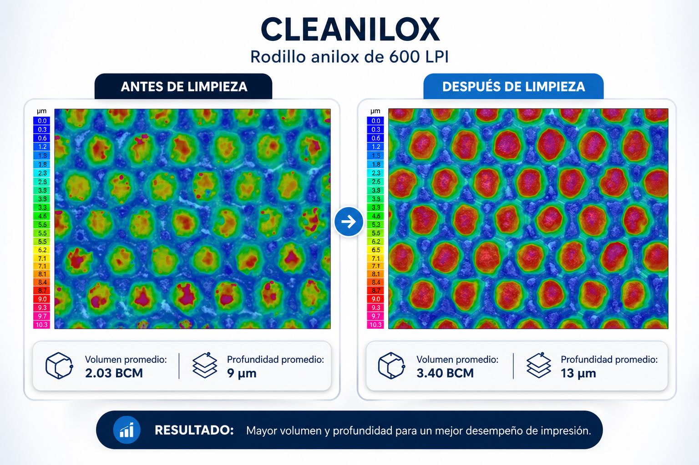

En la impresión flexográfica, pocas variables impactan tanto la calidad final como el estado del rodillo anilox. Cuando las celdas no están completamente limpias, la transferencia de tinta se vuelve inconsistente, aparecen variaciones de color y se pierde estabilidad en el proceso.
Pero más allá de la percepción visual, ¿qué ocurre realmente a nivel microscópico cuando un rodillo se limpia correctamente?
Para responder esta pregunta, se realizó una evaluación técnica utilizando medición instrumental de alta precisión.
Más que limpieza: recuperación funcional del anilox
La prueba se enfocó en analizar el comportamiento del rodillo antes y después de la limpieza, midiendo variables críticas como:
- Volumen de celda (BCM), directamente relacionado con la cantidad de tinta transferida.
- Profundidad de celda, clave para la uniformidad de impresión.
- Apariencia microscópica de la superficie.
Todo esto fue evaluado con tecnología ANICAM, permitiendo observar no solo cambios visibles, sino también la recuperación real de la geometría del rodillo.
¿Qué sucede cuando la tinta contamina el anilox?
Durante la prueba, los rodillos fueron contaminados de forma controlada con tinta azul y dejados secar bajo diferentes condiciones.
El resultado fue claro: las celdas pierden volumen efectivo y su geometría se ve alterada.
Esto significa, en términos operativos:
- Menor capacidad de carga de tinta.
- Transferencia irregular.
- Variabilidad en el color y cobertura.
El efecto de la limpieza: lo que no se ve a simple vista

Después de aplicar el proceso de limpieza (con parámetros controlados de fricción, dosificación y enjuague), se observaron cambios consistentes en todas las lineaturas evaluadas:
1. Recuperación del volumen de celda
Las mediciones mostraron que el volumen aumenta después de la limpieza, acercándose a valores funcionales del rodillo.
2. Estabilización de la profundidad
La profundidad de las celdas regresa a rangos operativos, lo que permite una transferencia más uniforme.
3. Reaparición de la estructura celular
Las imágenes microscópicas revelan una diferencia clave: las celdas pasan de verse parcialmente obstruidas a definidas y abiertas.
Estos efectos fueron consistentes tanto en rodillos de baja como de alta lineatura (600 hasta 1200 LPI), donde la exigencia de limpieza es significativamente mayor.
Alta lineatura: donde la limpieza realmente se pone a prueba
En rodillos de 1000 y 1200 LPI, cualquier residuo tiene un impacto mucho mayor debido al tamaño reducido de las celdas.
En este escenario, la evaluación mostró que:
- Incluso después de contaminación severa (tinta seca hasta 24 horas).
- La limpieza permite recuperar condiciones cercanas a operación.
- La estructura de las celdas vuelve a ser funcional y uniforme.
Este punto es crítico, ya que en aplicaciones de alta definición, pequeñas variaciones pueden traducirse en defectos visibles en impresión.
Consistencia: el verdadero indicador de desempeño
Más allá de los valores individuales, el análisis comparativo demuestra algo más importante: la limpieza mantiene un comportamiento consistente en diferentes condiciones de operación.
Esto incluye:
- Diferentes lineaturas.
- Diferentes niveles de contaminación.
- Diferentes zonas del rodillo.
La consistencia es clave porque garantiza que el proceso no dependa de ajustes constantes o correcciones en máquina.
Conclusión técnica
El estudio concluye que el desempeño de Cleanilox GA en la limpieza de rodillos anilox es consistente en todas las condiciones evaluadas, logrando restaurar las propiedades funcionales de las celdas.
¿Qué significa esto en planta?
Traducido a operación real, una limpieza efectiva del anilox impacta directamente en:
- Mayor estabilidad en impresión.
- Reducción de variaciones de color.
- Menor desperdicio.
- Mejor repetibilidad del proceso.
En otras palabras, no se trata solo de limpiar… se trata de recuperar el desempeño real del rodillo.
¿Quiere medir el desempeño de su limpieza?
Le acompañamos en la evaluación con Cleanilox GA y en la verificación con tecnología ANICAM en su línea flexográfica.
Contactar a Ventas